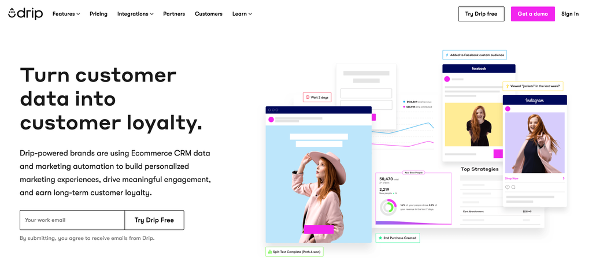

ลองนึกถึงจำนวนอีเมลที่คุณได้รับในกล่องจดหมายต่อวัน ส่วนใหญ่อาจเป็นจดหมายข่าวทางอีเมลที่คุณสมัครไว้ บางที่คุณแทบรอไม่ไหวที่จะเปิดทุกวันในขณะที่คนอื่น ๆ คุณสงสัยว่าพวกเขามาถึงคุณได้อย่างไร
การสร้างจดหมายข่าวทางอีเมลเฉพาะกลุ่มอาจเป็นวิธีที่ดีในการเข้าถึงกลุ่มคนเป้าหมายและสร้างธุรกิจที่มั่นคงและยั่งยืน ธุรกิจล้านดอลลาร์เช่น theSkimm ถูกสร้างขึ้นจากจดหมายข่าวทางอีเมลรายวัน

เหนือสิ่งอื่นใดการเริ่มต้นจดหมายข่าวทางอีเมลไม่จำเป็นต้องเป็นเรื่องยาก ด้วยแพลตฟอร์มเช่น ConvertKit, Drip, MailChimp และ Aweber มันง่ายกว่าที่เคย ขั้นตอนให้คุณปฏิบัติตามมีดังนี้:
1. ตัดสินใจเลือกช่องที่คุณต้องการให้บริการและรูปแบบของอีเมลของคุณ
2. เลือกผู้ให้บริการการตลาดทางอีเมล
3. สร้างหน้า Landing Page ง่ายๆและดึงดูดการเข้าชมไปยังหน้านั้น
4. ส่งอีเมลไปยังรายการนั้นเป็นประจำ
เป้าหมายของรายชื่ออีเมลของคุณคือการสร้างความไว้วางใจดังนั้นลูกค้าของคุณจะเปิดอีเมลของคุณทุกวัน
เมื่อคุณมีรายชื่อบุคคลขนาดใหญ่ที่เปิดอีเมลของคุณแล้วคุณมีหลายวิธีในการสร้างรายได้จากรายการนั้นเช่น:
Our Line Account